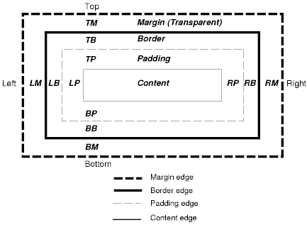

Margin properties are used to define the outer space around an element, which is rendered on the browser after the border style.
Border properties are sat between the margin and the padding - creating a border around the padding element and content.
Padding properties are used to define the inner space around an element, which is rendered on the browser before the border style.
